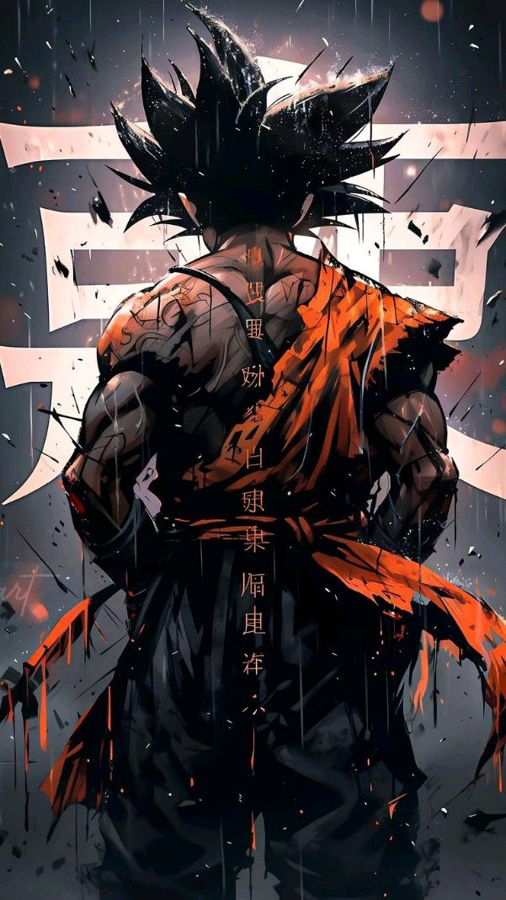
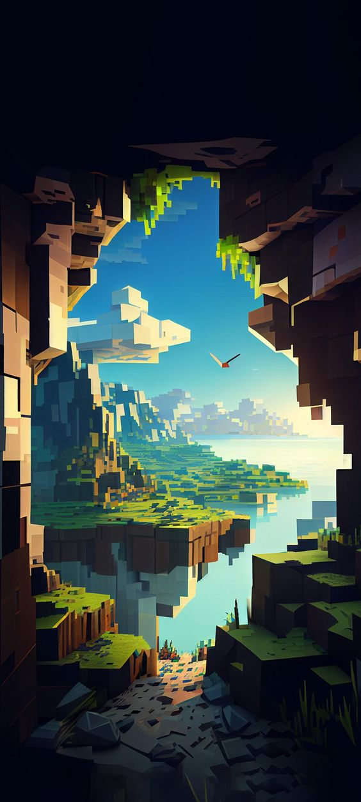

Mangwah, a whimsical fusion of mango and haha, exists in an imaginary realm where the vibrant colors of mangoes come to life in lively artwork. In this playful manga, characters with eyes as wide as ripe mangoes embark on a rollercoaster of emotions, each chapter unfolding with surprise and varied flavors akin to the tropical fruit. What sets Mangwah apart is its infectious laughter, turning witty dialogues and comedic situations into a universal language that bridges gaps and brings people together. Picture flipping through its pages on a lazy afternoon, the sun casting a warm glow as troubles dissolve in the sweetness of mango-inspired humor, leaving a lingering joy that echoes long after the imaginary manga is closed. Mangwah, a delightful escape where every moment is as sweet as the first bite of a perfectly ripe mango.
